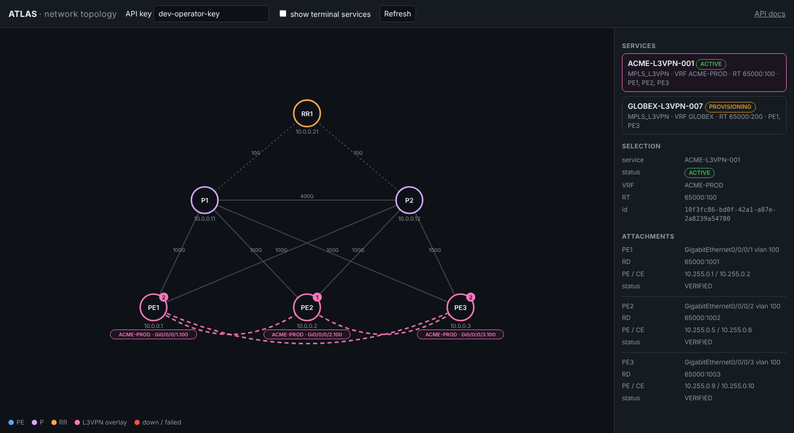
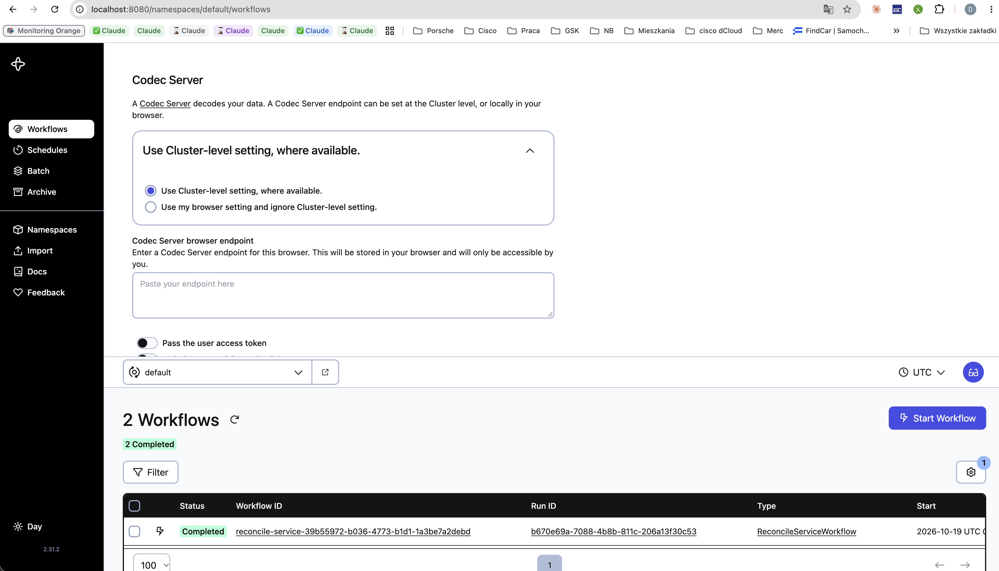

Technical brief prepared for the DriveNets “Senior Python Engineer — Network Orchestration” review
ATLAS provisions, verifies, reconciles and decommissions MPLS L3VPN services across a service-provider core. An operator submits a request through a REST API; a durable Temporal workflow allocates resources, renders vendor-specific configuration, pushes it to each PE router, verifies BGP/VRF/interface state and connectivity, and commits the service — or, when a device fails part-way, runs a Saga-style compensation that restores every touched router and releases the resources. It was designed and built as a production-shaped system (API, database, workflow engine, adapters, observability, Kubernetes packaging, CI), not as a script.
main| Role requirement | What ATLAS demonstrates | Status |
|---|---|---|
| Python backend engineering (async, typed, tested) | Python 3.12, FastAPI + Pydantic v2, SQLAlchemy 2 async, structlog; ruff + mypy clean; 174 tests incl. end-to-end through the real API and workflow engine | Done |
| Complex workflows / distributed systems | Temporal as the authoritative execution engine: durable execution across worker restarts, per-activity retry policies with exponential backoff, heartbeats, cancellation (signal + native), workflow versioning (workflow.patched), determinism rules; Saga compensation in reverse order with an idempotent per-device operation ledger | Done |
| BGP / MPLS service orchestration | L3VPN domain model (VRF, RD, RT import/export, PE–CE sub-interfaces, static / eBGP PE–CE), vendor templates for IOS XR and Junos, pre-deployment validation, post-deployment verification (VRF/RT/RD, interface, BGP session) and pairwise connectivity matrix | Done |
| Kubernetes, hands-on | Helm chart: API + worker Deployments with startup/readiness/liveness probes, pre-install/upgrade migration hook Job (Alembic + seed), ConfigMap/Secret split with existingSecret for ESO/Vault, HPA, PDB, NetworkPolicy, ServiceMonitor, non-root / read-only-FS security context, graceful worker drain (120 s). In-cluster dev dependencies (PostgreSQL, Temporal) for a laptop cluster (OrbStack). helm lint --strict + template + kubeconform in CI | Done |
| PostgreSQL / data integrity | 10 tables, FKs, indexes; concurrency-safe resource allocation (RD/RT/VLAN/subnet) enforced by a UNIQUE constraint + SAVEPOINT retry rather than locks; optimistic locking (version); audit log; Alembic migrations with upgrade/downgrade round-trip in CI | Done |
| Failure recovery / transactional consistency | Failure classification (transient / permanent / unknown) drives retry vs. compensate vs. inspect-device-state; MANUAL_INTERVENTION_REQUIRED when recovery cannot be proven safe; a real cancellation race (write completed while the activity was being cancelled) was caught by the e2e suite and fixed | Done |
| Observability | Prometheus metrics (atlas_workflow_*, atlas_device_operation_*, drift), structured JSON logs with secret redaction and correlation IDs, OpenTelemetry tracing (FastAPI + Temporal interceptor), Grafana dashboard | Done |
| Network automation interfaces | Adapter abstraction (NetworkAdapter protocol); stateful mock with failure injection; Cisco IOS XR and Juniper Junos NETCONF adapters (candidate/commit, rollback by commit id, config diff) — ready to point at containerlab / XRd | Done (NETCONF parsers simplified) |
operator / NOC tooling
│ REST (202 Accepted, Idempotency-Key)
▼
┌─────────────────────┐ ┌─────────────────────┐
│ FastAPI gateway │ │ Temporal server │
│ auth · validation │─────▶│ durable workflows │
│ service controller │ │ retries · timers │
└──────────┬──────────┘ └──────────┬──────────┘
│ │ task queue
▼ ▼
┌─────────────────────┐ ┌─────────────────────┐
│ PostgreSQL │◀────▶│ Orchestration │
│ inventory · desired│ │ worker: activities │
│ state · allocations│ │ saga · reconcile │
│ ledger · audit │ └──────────┬──────────┘
└─────────────────────┘ │ NetworkAdapter
┌───────────┼───────────┐
▼ ▼ ▼
PE1 PE2 PE3 (mock / IOS XR / Junos)
└───── MPLS core ─────┘
REQUESTED → VALIDATING → ALLOCATING → (generate configs, pre-deployment validation)
→ PROVISIONING: PE1 ✓ → PE2 ✓ → PE3 ✗ (ConfigurationRejected, permanent)
→ ROLLING_BACK: rollback PE2 ✓ → rollback PE1 ✓ → release RD/RT/VLAN/subnets
→ ROLLED_BACK (audit: COMPENSATION_EXECUTED ×2, RESOURCES_RELEASED)
Transient failure (TIMEOUT_ON_PE2) → retried with backoff → … → VERIFYING → ACTIVE
Partial apply (UNKNOWN) → inspect device state → continue or compensate
Compensation itself fails → MANUAL_INTERVENTION_REQUIRED (nothing hidden)
CancelledAfterSettled).ghcr.io/damiandabros-lang/atlas
/ui/topology): inventory and core links from the database; selecting a service overlays its VRF attachments and virtual full-mesh. Refreshes every 5 s — provisioning, rollback and decommission are visible as they happen.
| Capability | How |
|---|---|
| Request a service | POST /api/v1/services/l3vpn → 202 + workflow id; Idempotency-Key replay; X-Correlation-ID through logs, audit and Temporal |
| Observe | GET …/status (lifecycle + live workflow stage), GET …/history (audit trail), Temporal UI, Grafana, /ui/topology |
| Operate | POST …/cancel (cooperative signal, then native cancel → compensation), DELETE (decommission workflow, reverse order), POST …/reconcile (desired vs observed per device, e.g. route_target 65000:100 → 65000:200 = DRIFT_DETECTED) |
| Deploy | docker compose up (Postgres, Temporal + UI, API, worker, Prometheus, Grafana, optional OTel + Jaeger) · helm install with values-orbstack.yaml or an external PostgreSQL / Temporal Cloud |
| Fail safely | ATLAS_MOCK_FAILURE_MODE=FAIL_ON_PE3|TIMEOUT_ON_PE2|PARTIAL_CONFIGURATION|BGP_SESSION_DOWN|DEVICE_UNREACHABLE — each with a scripted demo and an e2e test |
Built with Python 3.12, FastAPI, Pydantic v2, SQLAlchemy 2, Alembic, PostgreSQL 16, Temporal Python SDK 1.34, Jinja2, structlog, Prometheus, OpenTelemetry, Docker, Helm, GitHub Actions. Developed with AI-assisted tooling under my architecture and review; every design decision, failure-handling rule and test scenario in this document is mine to defend in a technical interview. Repository: github.com/damiandabros-lang/atlas · docs/ARCHITECTURE.md · docs/adr/ · docs/RUNBOOK.md